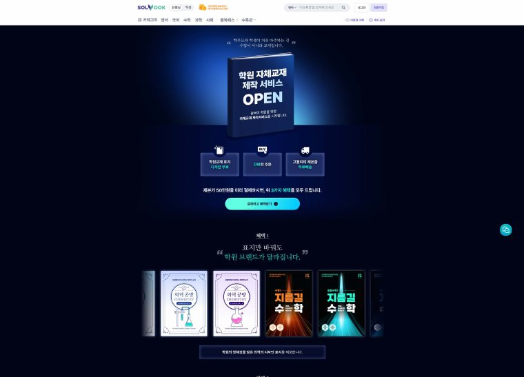
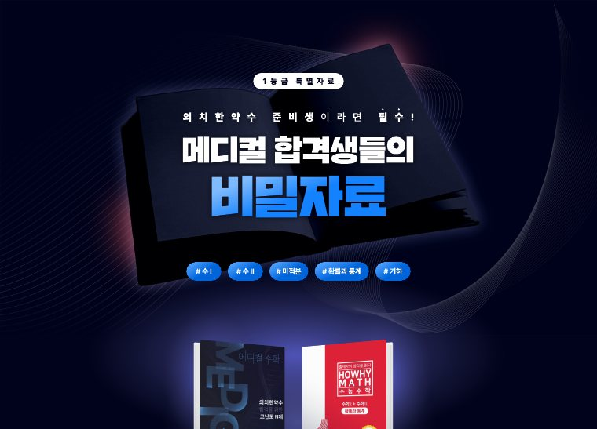
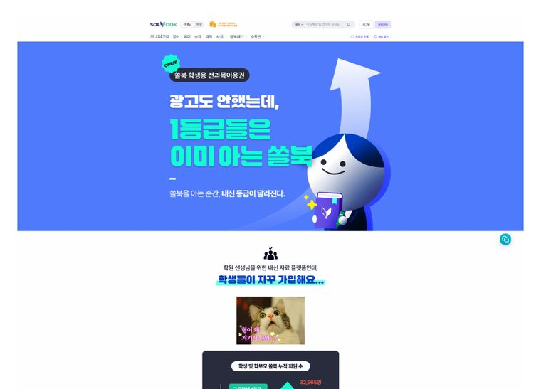
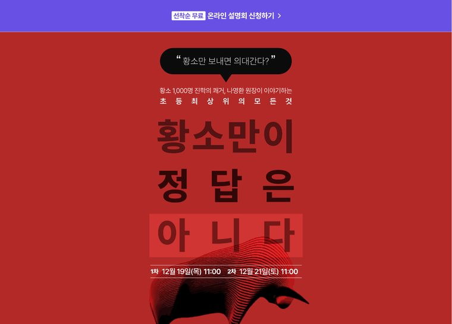
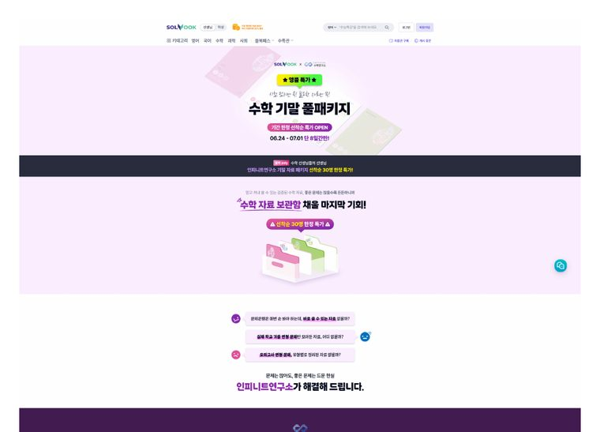

교육·에너지·F&B·식품·IP 플랫폼까지 빠른 학습력으로 다양한 도메인 프로젝트를 경험하며, 0 to 1을 만드는 일을 반복해온 BO입니다. 사업 기회 발굴, MVP 실행, 성장, 리텐션, 사업 체질 개선 등을 통해 매출 성장을 이끌었습니다.
새로운 사업을 발굴해 매출로 키우고, 운영을 체계로 만드는 일 — 10년간 다른 산업을 넘나들며 키워온 강점입니다.
없던 사업을 세우고, 초기 혼란을 표준 프로세스로 정리해 굴러가게 만드는 일. 새 사업·서비스를 빠르게 안착시키는 온보딩·운영 설계가 강점입니다.
컬리·쿠팡 입점부터 신규 거래처 발굴·영업, 라이브 쇼핑을 통한 매출 확대, 파트너사 변경을 통한 비용 절감, B2B 협업 제안까지 경험했습니다.
매출·손익을 직접 책임지고 KPI로 관리해 왔습니다. 성과를 지표로 읽고 리포트로 개선점을 찾는 일을 숫자로 말할 수 있습니다.
생산–배송 프로세스, 서비스 정책을 직접 만들고 MD·생산·물류·투자사와 협업했습니다. 유관부서와 함께 만들어가는 일에 경험이 많습니다.
AI 기반 운영 자동화로 실행 비용과 반복 업무를 줄이고, 확보한 시간을 성장 기회 발굴에 집중했습니다. 비개발자로서 제본 서비스의 반복 수작업을 직접 시스템으로 전환했고, AI로 무엇에 집중할지를 아는 사람입니다.
교육·에너지·F&B·식품 — 산업은 달랐지만 일의 본질은 같았습니다. 새 사업을 세우고, 채널을 넓히고, 숫자로 운영을 안정시키는 것.
숫자로 증명되는 대표 프로젝트입니다. 각 프로젝트를 배경 → 나의 역할 → 성과 중심으로 정리했습니다.
신규 사업부에서 컬리·쿠팡 등 외부 커머스 채널을 직접 발굴·입점시키고 채널별 전략을 설계. 생산–포장–배송 프로세스를 표준화하고 자체 물류를 풀필먼트로 전환. 재직 기간 동안 사업부 월 매출 1,200만 원 → 2억 4천만 원으로 약 20배 성장.
발전량 예측제도를 담당하며 매출·손익을 직접 관리, 신규 거래처 발굴과 서비스 개선으로 재직 중 반기 매출 1.7억→6.5억(약 3.8배) 성장을 견인. 제도 변화에 앞서 차세대 VPP 사업을 기획하며 ‘다음 성장 곡선’을 설계.
영어·국어 중심 플랫폼에 수학 과목을 신규 런칭하고 수·사·과로 확장. 제본 사업도 0→1로 런칭·확장하며, 발굴–사업화 셋팅–운영 안정화의 전 과정을 BO 관점에서 책임.
연구소·공장·운영조직을 처음부터 세우고, 투자사 대응과 손익 관리, 국가지원사업·거래처 확장까지 수행. 무에서 체계를 만들고 유관 조직을 굴러가게 한 경험.
직접 기획·실행한 PR·랜딩 페이지와 실무 문서입니다. (클릭하면 전체 페이지·원문이 열립니다)
직접 런칭·확장한 사업들의 PR·랜딩 페이지 (기획 · 디자인&퍼블 커뮤 · 성과분석)





사업을 숫자로 설득하고 실행으로 옮긴 실무 문서입니다. (클릭하면 원문이 열립니다)
매출·거래액과 수익률을 키우는 사업개발/BD 직무에 제 경험을 1:1로 매핑했습니다. 숫자를 중심으로 성장 가설을 세워 검증하고 구조화하는 일을 10년간 반복해 왔습니다.
‘0 to 1’에서 멈추지 않고, 발굴한 사업을 매출로·체질로 키워온 것이 제가 10년간 해온 일입니다.